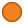

<!doctype html>
<html lang="en">
    <head>
        <meta charset="utf-8">
        <meta http-equiv="X-UA-Compatible" content="IE=edge">
        <meta name="viewport" content="initial-scale=1,user-scalable=no,maximum-scale=1,width=device-width">
        <meta name="mobile-web-app-capable" content="yes">
        <meta name="apple-mobile-web-app-capable" content="yes">
        <link rel="stylesheet" href="css/leaflet.css">
        <link rel="stylesheet" href="css/qgis2web.css"><link rel="stylesheet" href="css/fontawesome-all.min.css">
        <link rel="stylesheet" href="css/leaflet-measure.css">
        <style>
        #map {
            width: 1103px;
            height: 564px;
        }
        </style>
        <title></title>
    </head>
    <body>
        <div id="map">
        </div>
        <script src="js/qgis2web_expressions.js"></script>
        <script src="js/leaflet.js"></script>
        <script src="js/leaflet.rotatedMarker.js"></script>
        <script src="js/leaflet.pattern.js"></script>
        <script src="js/leaflet-hash.js"></script>
        <script src="js/Autolinker.min.js"></script>
        <script src="js/rbush.min.js"></script>
        <script src="js/labelgun.min.js"></script>
        <script src="js/labels.js"></script>
        <script src="js/leaflet-measure.js"></script>
        <script src="data/WilayahProvinsi_1.js"></script>
        <script src="data/JmlPesertaGISAngkI_2.js"></script>
        <script>
        var highlightLayer;
        function highlightFeature(e) {
            highlightLayer = e.target;

            if (e.target.feature.geometry.type === 'LineString') {
              highlightLayer.setStyle({
                color: '#ffff00',
              });
            } else {
              highlightLayer.setStyle({
                fillColor: '#ffff00',
                fillOpacity: 1
              });
            }
            highlightLayer.openPopup();
        }
        var map = L.map('map', {
            zoomControl:true, maxZoom:28, minZoom:1
        }).fitBounds([[-14.218788653721239,95.48025739936469],[8.87758671465326,140.72778280964997]]);
        var hash = new L.Hash(map);
        map.attributionControl.setPrefix('<a href="https://github.com/tomchadwin/qgis2web" target="_blank">qgis2web</a> &middot; <a href="https://leafletjs.com" title="A JS library for interactive maps">Leaflet</a> &middot; <a href="https://qgis.org">QGIS</a>');
        var autolinker = new Autolinker({truncate: {length: 30, location: 'smart'}});
        var measureControl = new L.Control.Measure({
            position: 'topleft',
            primaryLengthUnit: 'meters',
            secondaryLengthUnit: 'kilometers',
            primaryAreaUnit: 'sqmeters',
            secondaryAreaUnit: 'hectares'
        });
        measureControl.addTo(map);
        document.getElementsByClassName('leaflet-control-measure-toggle')[0]
        .innerHTML = '';
        document.getElementsByClassName('leaflet-control-measure-toggle')[0]
        .className += ' fas fa-ruler';
        var bounds_group = new L.featureGroup([]);
        function setBounds() {
        }
        map.createPane('pane_ESRIWorldTopo_0');
        map.getPane('pane_ESRIWorldTopo_0').style.zIndex = 400;
        var layer_ESRIWorldTopo_0 = L.tileLayer('https://services.arcgisonline.com/ArcGIS/rest/services/World_Topo_Map/MapServer/tile/{z}/{y}/{x}', {
            pane: 'pane_ESRIWorldTopo_0',
            opacity: 1.0,
            attribution: '',
            minZoom: 1,
            maxZoom: 28,
            minNativeZoom: 0,
            maxNativeZoom: 20
        });
        layer_ESRIWorldTopo_0;
        map.addLayer(layer_ESRIWorldTopo_0);
        function pop_WilayahProvinsi_1(feature, layer) {
            layer.on({
                mouseout: function(e) {
                    for (i in e.target._eventParents) {
                        e.target._eventParents[i].resetStyle(e.target);
                    }
                    if (typeof layer.closePopup == 'function') {
                        layer.closePopup();
                    } else {
                        layer.eachLayer(function(feature){
                            feature.closePopup()
                        });
                    }
                },
                mouseover: highlightFeature,
            });
            var popupContent = '<table>\
                    <tr>\
                        <th scope="row">PROVINSI</th>\
                        <td>' + (feature.properties['PROVINSI'] !== null ? autolinker.link(feature.properties['PROVINSI'].toLocaleString()) : '') + '</td>\
                    </tr>\
                    <tr>\
                        <th scope="row">JML PESERT</th>\
                        <td>' + (feature.properties['JML PESERT'] !== null ? autolinker.link(feature.properties['JML PESERT'].toLocaleString()) : '') + '</td>\
                    </tr>\
                    <tr>\
                        <th scope="row">NAMA-INSTI</th>\
                        <td>' + (feature.properties['NAMA-INSTI'] !== null ? autolinker.link(feature.properties['NAMA-INSTI'].toLocaleString()) : '') + '</td>\
                    </tr>\
                </table>';
            layer.bindPopup(popupContent, {maxHeight: 400});
        }

        function style_WilayahProvinsi_1_0() {
            return {
                pane: 'pane_WilayahProvinsi_1',
                opacity: 1,
                color: 'rgba(0,0,0,1.0)',
                dashArray: '1,5',
                lineCap: 'square',
                lineJoin: 'bevel',
                weight: 1,
                fillOpacity: 0,
                interactive: true,
            }
        }
        map.createPane('pane_WilayahProvinsi_1');
        map.getPane('pane_WilayahProvinsi_1').style.zIndex = 401;
        map.getPane('pane_WilayahProvinsi_1').style['mix-blend-mode'] = 'normal';
        var layer_WilayahProvinsi_1 = new L.geoJson(json_WilayahProvinsi_1, {
            attribution: '',
            interactive: true,
            dataVar: 'json_WilayahProvinsi_1',
            layerName: 'layer_WilayahProvinsi_1',
            pane: 'pane_WilayahProvinsi_1',
            onEachFeature: pop_WilayahProvinsi_1,
            style: style_WilayahProvinsi_1_0,
        });
        bounds_group.addLayer(layer_WilayahProvinsi_1);
        map.addLayer(layer_WilayahProvinsi_1);
        function pop_JmlPesertaGISAngkI_2(feature, layer) {
            layer.on({
                mouseout: function(e) {
                    for (i in e.target._eventParents) {
                        e.target._eventParents[i].resetStyle(e.target);
                    }
                    if (typeof layer.closePopup == 'function') {
                        layer.closePopup();
                    } else {
                        layer.eachLayer(function(feature){
                            feature.closePopup()
                        });
                    }
                },
                mouseover: highlightFeature,
            });
            var popupContent = '<table>\
                    <tr>\
                        <th scope="row">PROVINSI</th>\
                        <td>' + (feature.properties['PROVINSI'] !== null ? autolinker.link(feature.properties['PROVINSI'].toLocaleString()) : '') + '</td>\
                    </tr>\
                    <tr>\
                        <th scope="row">JML PESERT</th>\
                        <td>' + (feature.properties['JML PESERT'] !== null ? autolinker.link(feature.properties['JML PESERT'].toLocaleString()) : '') + '</td>\
                    </tr>\
                    <tr>\
                        <th scope="row">NAMA-INSTI</th>\
                        <td>' + (feature.properties['NAMA-INSTI'] !== null ? autolinker.link(feature.properties['NAMA-INSTI'].toLocaleString()) : '') + '</td>\
                    </tr>\
                </table>';
            layer.bindPopup(popupContent, {maxHeight: 400});
        }

        function style_JmlPesertaGISAngkI_2_0(feature) {
            if (feature.properties['JML PESERT'] >= 1.000000 && feature.properties['JML PESERT'] <= 1.000000 ) {
                return {
                pane: 'pane_JmlPesertaGISAngkI_2',
                radius: 4.0,
                opacity: 1,
                color: 'rgba(179,92,21,1.0)',
                dashArray: '',
                lineCap: 'butt',
                lineJoin: 'miter',
                weight: 2.0,
                fill: true,
                fillOpacity: 1,
                fillColor: 'rgba(247,128,30,1.0)',
                interactive: true,
            }
            }
            if (feature.properties['JML PESERT'] >= 1.000000 && feature.properties['JML PESERT'] <= 2.000000 ) {
                return {
                pane: 'pane_JmlPesertaGISAngkI_2',
                radius: 10.0,
                opacity: 1,
                color: 'rgba(179,92,21,1.0)',
                dashArray: '',
                lineCap: 'butt',
                lineJoin: 'miter',
                weight: 2.0,
                fill: true,
                fillOpacity: 1,
                fillColor: 'rgba(247,128,30,1.0)',
                interactive: true,
            }
            }
            if (feature.properties['JML PESERT'] >= 2.000000 && feature.properties['JML PESERT'] <= 5.000000 ) {
                return {
                pane: 'pane_JmlPesertaGISAngkI_2',
                radius: 16.0,
                opacity: 1,
                color: 'rgba(179,92,21,1.0)',
                dashArray: '',
                lineCap: 'butt',
                lineJoin: 'miter',
                weight: 2.0,
                fill: true,
                fillOpacity: 1,
                fillColor: 'rgba(247,128,30,1.0)',
                interactive: true,
            }
            }
        }
        map.createPane('pane_JmlPesertaGISAngkI_2');
        map.getPane('pane_JmlPesertaGISAngkI_2').style.zIndex = 402;
        map.getPane('pane_JmlPesertaGISAngkI_2').style['mix-blend-mode'] = 'normal';
        var layer_JmlPesertaGISAngkI_2 = new L.geoJson(json_JmlPesertaGISAngkI_2, {
            attribution: '',
            interactive: true,
            dataVar: 'json_JmlPesertaGISAngkI_2',
            layerName: 'layer_JmlPesertaGISAngkI_2',
            pane: 'pane_JmlPesertaGISAngkI_2',
            onEachFeature: pop_JmlPesertaGISAngkI_2,
            pointToLayer: function (feature, latlng) {
                var context = {
                    feature: feature,
                    variables: {}
                };
                return L.circleMarker(latlng, style_JmlPesertaGISAngkI_2_0(feature));
            },
        });
        bounds_group.addLayer(layer_JmlPesertaGISAngkI_2);
        map.addLayer(layer_JmlPesertaGISAngkI_2);
        var baseMaps = {};
        L.control.layers(baseMaps,{'Jml Peserta GIS Angk. I<br /><table><tr><td style="text-align: center;"></td><td>1</td></tr><tr><td style="text-align: center;"></td><td>2</td></tr><tr><td style="text-align: center;"></td><td>3-5</td></tr></table>': layer_JmlPesertaGISAngkI_2,' Wilayah Provinsi': layer_WilayahProvinsi_1,"ESRI World Topo": layer_ESRIWorldTopo_0,},{collapsed:false}).addTo(map);
        setBounds();
        </script>
    </body>
</html>
